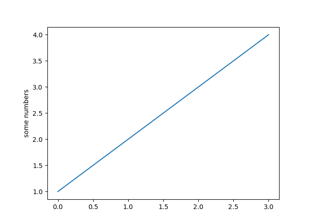
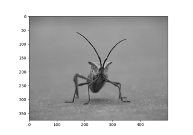
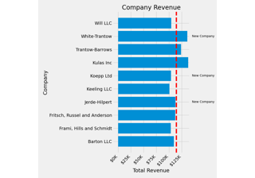
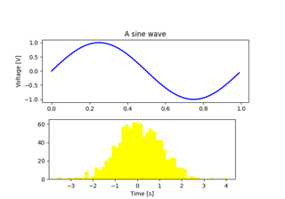

Tutorials#
This page contains a few tutorials for using Matplotlib. For the old tutorials, see below.
For shorter examples, see our examples page. You can also find external resources and a FAQ in our user guide.

Pyplot tutorial

Image tutorial

The Lifecycle of a Plot

Artist tutorial
User guide tutorials#
Many of our tutorials were moved from this section to Using Matplotlib:
Introductory#
Intermediate#
Advanced#
Colors#
See Colors.
Text#
See Text.
Toolkits#
See User Toolkits.